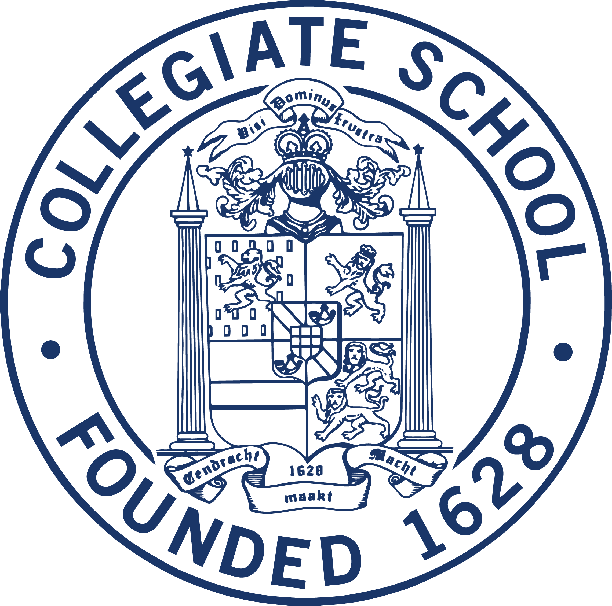

Experience
Field Organizer, Alvin Bragg for Manhattan District Attorney
June 2021 - July 2021
Worked ten- to fifteen-hour days speaking to voters on the street, managing dozens of volunteers for canvassing shifts, delivering materials all over Manhattan, making 259 campaign calls, learning about Manhattan politics and election law, and monitoring the absentee ballot count. We were outspent 7 to 1 by a Wall Street-backed campaign—and we won.
Lab of Dr. Travis Hollmann, Memorial Sloan Kettering Cancer Center
January 2020 - April 2021
Armed with practical experience from the Weigelt-Reis-Filho Lab, I moved beyond ad-hoc tasks to conduct high-throughput genomic analysis for a project studying the role of Beta-2-microglobulin in the behavior of renal cell carcinomas. I learned the necessary statistics as I went, using linear mixed models in R to look for expression differences in 49 molecular targets between B2M-retaining and B2M-deficient tumors
Lab of Dr. Britta Weigelt and Dr. Jorge Reis-Filho, Memorial Sloan Kettering Cancer Center
June 2019 - August 2019
Arriving with no prior experience, I took on a wide variety of molecular biology lab responsibilities (many with complicated procedures), including PCRs, DNA/RNA extractions, gel electrophoresis, Western blots, and staining procedures. I also attended regular lectures for oncology fellows and residents, where I learned about study design, clinical trial logistics, ethical issues, and current frontiers in cancer research and treatment.
Executive Editor, The Collegiate Journal
May 2020 - June 2021
Originally recruited as a staff writer for Collegiate’s student-run monthly newspaper after publishing an op-ed calling for the removal of Collegiate’s mascot, I took on Layout Editor position with no prior experience and learned InDesign as I went. As a senior, I was promoted Executive Editor,a role in which I supervised an 18-person editorial board and 40+ staff writers, learned how to effectively delegate tasks, executed the printing and citywide home delivery of 200 paper copies, and navigated a sometimes tense relationship with faculty advisors and the school administration.
Co-Captain, Collegiate School Science Olympiad
June 2020 - June 2021
Coordinated and motivated Collegiate's 30-person Science Olympiad team through the pandemic year, including organizing for online tournaments, managing an ever-changing team roster, and keeping morale high without travel tournaments or in-person practices.
Education
The University of ChicagoSeptember 2021 - June 2025 |
|
|
B.A., Biology & Public Policy |
|  | |
Collegiate SchoolSeptember 2008 - May 2021 |
|
|
High School Diploma |
Publications
Pareja, F., Toss, M. S., Geyer, F. C., Silva, E. M., Vahdatinia, M., Sebastiao, A. P. M., Selenica, P., Szatrowski, A., Edelweiss, M., Wen, H. Y., Mihai, R., Varga, Z., Foschini, M. P., Rubin, B. P., Ellis, I. O., Chandarlapaty, S., Jungbluth, A. A., Brogi, E., Weigelt, B., ... Rakha, E. A. (2020). Immunohistochemical assessment of HRAS Q61R mutations in breast adenomyoepitheliomas. Histopathology, 76(6), 865–874. doi.org/10.1111/his.14057
Skills
R and tidyverse for statistics and visualization
HTML/CSS and some Javascript (this website!)
Lab experience with PCR, DNA extractions, and staining
Adobe InDesign
Adobe Illustrator